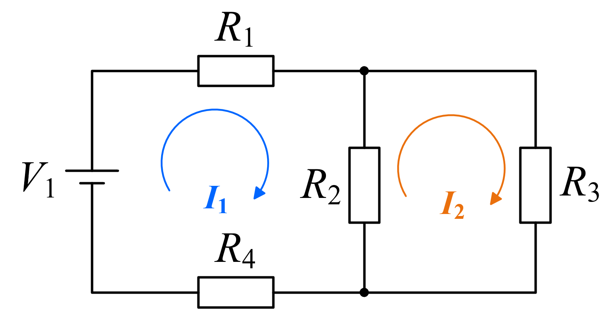

DC电路（双网孔） | 调节任意电阻值，观察KVL和KCL始终成立
\(U_1 = 12\text{V}\)（固定） | 三个回路 · 四个电阻 · 两个网孔电流
固定电压源，位于左侧支路

\(\sum V = 0\) 环绕任何闭合回路，电压升的代数和等于电压降的代数和。无论元件参数如何变化，KVL始终严格成立。本仿真展示了3个回路的KVL验证：左回路（\(U_1\)-\(R_1\)-\(R_2\)-\(R_4\)）、右回路（\(R_2\)-\(R_3\)）和外回路（\(U_1\)-\(R_1\)-\(R_3\)-\(R_4\)）。
\(\sum I = 0\) 在任意节点，流入节点的电流总和等于流出节点的电流总和。在本电路中，顶部中间节点B处：\(I_{R1}\)（流入）= \(I_{R2} + I_{R3}\)（流出），KCL始终精确成立。调节任何电阻值均可验证此关系。